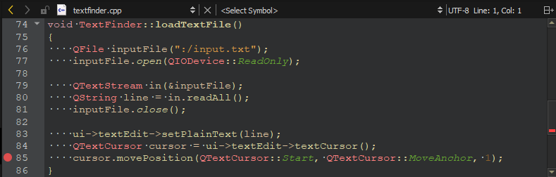
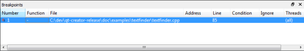
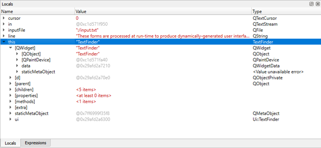

Debugging a C++ Example Application
This section uses the TextFinder example to illustrate how to debug Qt C++ applications in the Debug mode.
TextFinder reads a text file into QString and then displays it with QTextEdit. To look at the TextFinder class and see the stored data, place a breakpoint in textfinder.cpp, as follows:
- Click in between the line number and the window border on the line where we change the cursor position to set a breakpoint.

- Select Debug > Start Debugging > Start Debugging of Startup Project or press F5.
- To view information about the breakpoint, go to the Breakpoints view.

- To remove a breakpoint, right-click it and select Delete Breakpoint.
- To view the base classes and data members of the TextFinder class, go to the Locals view.

Modify the on_findButton_clicked() function to move back to the start of the document and continue searching once the cursor hits the end of the document. Add the following code snippet:
void TextFinder::on_findButton_clicked() { QString searchString = ui->lineEdit->text(); QTextDocument *document = ui->textEdit->document(); QTextCursor cursor = ui->textEdit->textCursor(); cursor = document->find(searchString, cursor, QTextDocument::FindWholeWords); ui->textEdit->setTextCursor(cursor); bool found = cursor.isNull(); if (!found && previouslyFound) { int ret = QMessageBox::question(this, tr("End of Document"), tr("I have reached the end of the document. Would you like " "me to start searching from the beginning of the document?"), QMessageBox::Yes | QMessageBox::No, QMessageBox::Yes); if (ret == QMessageBox::Yes) { cursor = document->find(searchString, QTextDocument::FindWholeWords); ui->textEdit->setTextCursor(cursor); } else return; } previouslyFound = found; }
If you compile and run the above code, however, the application does not work correctly due to a logic error. To locate this logic error, step through the code using the following buttons: (Stop Debugger), (Step Over),  (Step Into), and (Step Out).
(Step Into), and (Step Out).